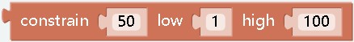

Math¶
¶
effect： Usually a digital block for assignment, the parameter can be negative or decimals.
¶
effect： Hexadecimal
¶
effect： The two sets of data are mapped in equal proportions, which are commonly used to control analog value modules.
¶
effect： Generally used for assignment after calculation
¶
effect： Perform selected operations on parameters
¶
effect： Graph formula related operations
¶
effect： Needless to say
¶
effect： Determine the type of the parameter and return a Boolean value
¶
effect： Perform operations such as rounding parameters
¶
effect： Get the relevant attributes of the list
¶
effect： Take the remainder
¶
effect： Limit the range of numbers. If it is less than the range, it is assigned to parameter 2, and if it is greater than the range, it is assigned to parameter 3.
¶
effect： Get a random integer in the specified interval